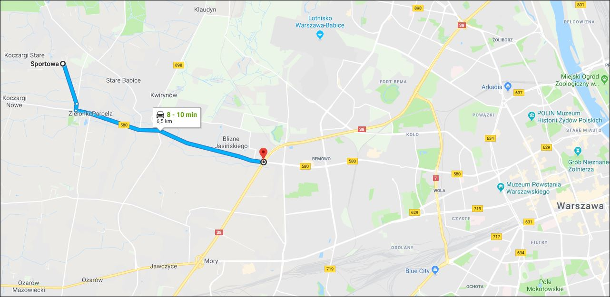
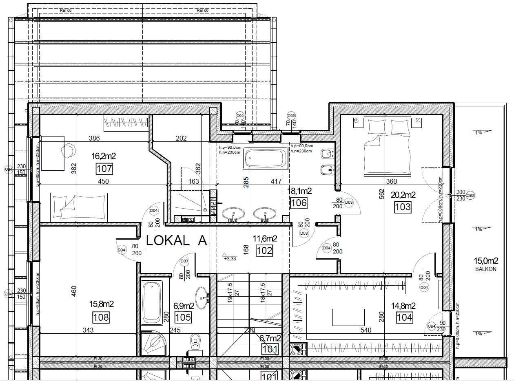
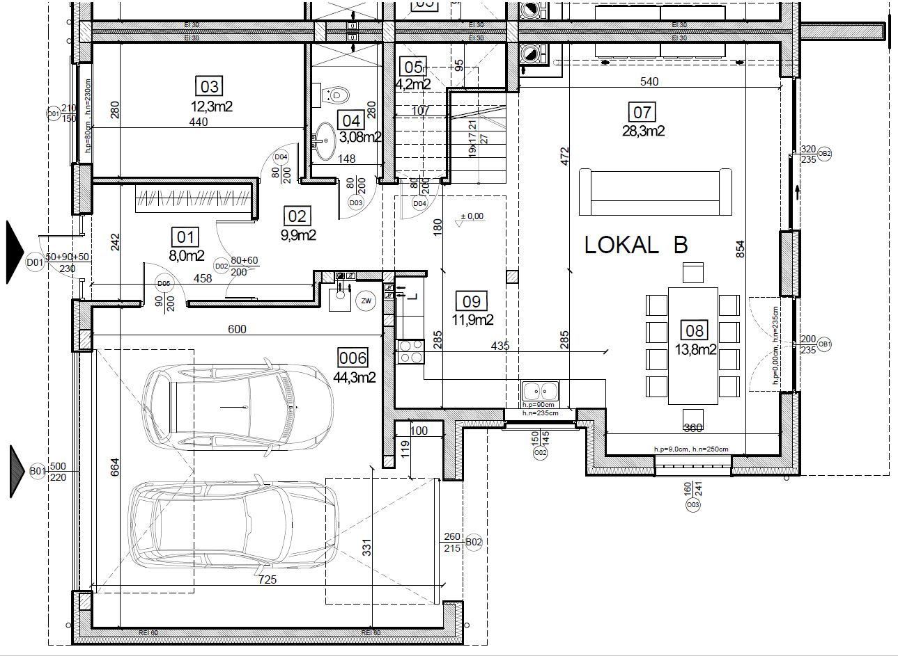
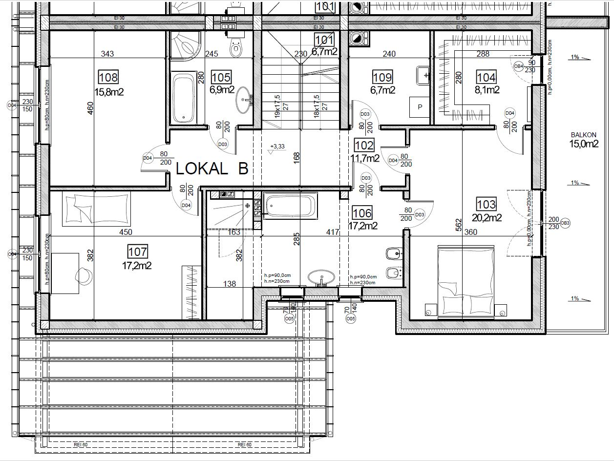

Nieruchomość stanowi dom jednorodzinny dwulokalowy. Do wyboru jeden z dwóch lokali, które są swoim lustrzanym odbiciem i oddzielone są ścianą przeciwpożarową. Lokale do sprzedaży z niezależną i ogrodzoną działką oraz dostępem do wszystkich mediów - prąd, gaz, woda oraz nowo wybudowana kanalizacja w ul. Sportowej.
Menu
Lokalizacja
Nieruchomość położona na ul. Sportowej, miejscowość Zielonki Wieś, gmina Stare Babice. Bliskość do ul. Warszawskiej i ul. Sienkiewicza stanowi korzystną lokalizację zarówno dla celów dojazdu do centrum Warszawy (ul. Warszawska bezpośrednio łączy się z drogą ekspresową S8), jak i chęci wyjazdu wgłąb Polski. Dynamicznie rozwijająca się infrastruktura w okolicy i nowa droga asfaltowa ul. Sportowej ze ścieżką rowerową i chodnikiem gwarantuje uśmiech na twarzy mieszkańców.

Informacje
Działka każdego z segmentów ma powierzchnię 470m^2 w tym ok. 210m_2 ogródka na tyłach domu. Powierzchnia jednego lokalu to ok. 250m2 obejmujących parter i piętro. W cenie zawiera się również ocieplone poddasze pod indywidualną aranżację. Osiągnięcie stanu deweloperskiego budynku nastąpi między II, a III kwartałem 2019r.

Udogodnienia
- 30 lat doświadczenia deweloperskiego na lokalnym rynku nieruchomości oraz współpraca ze zgranym zespołem specjalistów branżowych pozwoliły nam wykreować bryłę funkcjonalną i sprawdzoną. Układ niektórych pomieszczeń pozwala na wydzielenie dodatkowej łazienki/pralni, bądź pokoju/gabinetu.
- Obszerny garaż dwustanowiskowy o pow. ok. 45m2 łączący wjazd na działkę z ogródkiem. Możliwość zaparkowania 4 samochodów osobowych na posesji.
- Każdy z lokali wyposażono w taras o pow. ok. 20m2 zadaszony przez balkon o konstrukcji żelbetowej monolitycznej o pow. 15m2 z dostępem przez sypialnię oraz garderobę.
- Pod schodami wyodrębniono schowek/spiżarnię, gdzie bez problemu wpasuje się dodatkowa lodówka, artykuły spożywcze lub inne rzeczy materialne.
- Minimalizacja hałasu między Sąsiadami zapewniona przez podwójną ścianę wykonaną z pełnych bloczków silikatowych akustycznych gr. 18cm oddzielonych warstwą wełny akustycznej.
- Stan deweloperski obejmuje: dach pokryty blachodachówką, tynki, wylewki, instalacja kominowa, okna, drzwi wejściowe, brama garażowa, instalacja elektryczna, hydrauliczna, wykończenie elewacji, ogrzewanie podłogowe, teren wyrównany i uporządkowany. Szczegółowy opis standardu dostępny na życzenie.
Rzuty kondygnacji
Rzut parteru dla lokalu A

Rzut piętra dla lokalu A 
Rzut parteru dla lokalu B 
Rzut piętra dla lokalu B 
Wizualizacja vs. Budowa
LOKAL A
Wejście - Wiatrołap (Przedpokój)

Salon (Widok na klatkę schodową)

Salon (Widok na jadalnię)

Kuchnia (możliwa wyspa)

Łazienka na parterze

Łazienka master na piętrze

Łazienka dodatkowa na piętrze

Kontakt
Na życzenie Klienta jesteśmy otwarci na wizyty lokalne i zapoznawcze. Zapraszamy do kontaktu.
| Kacper Kowalewicz | Maciej Kowalewicz |
|---|---|
| +48 723-601-906 | +48 601-443-111 |
| kacper.kowalewicz@gmail.com | maciej-kowalewicz@wp.pl |
Rzuty kondygnacji, elewacja i PZT: Pracownia Projektowa EURO
Wizualizacja wnętrz: EG Projekt Ewelina Golinowska